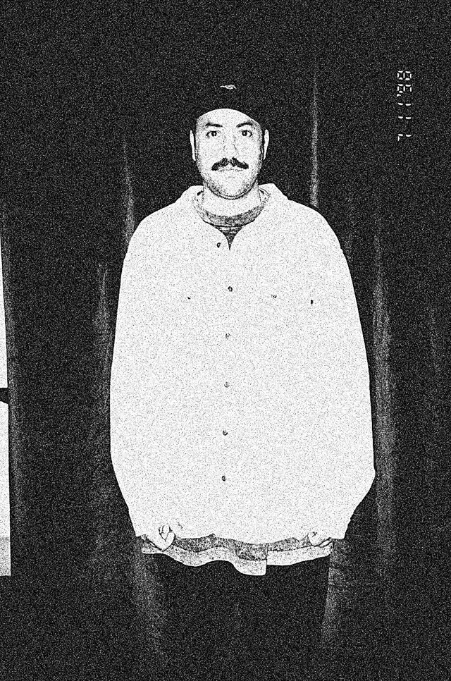
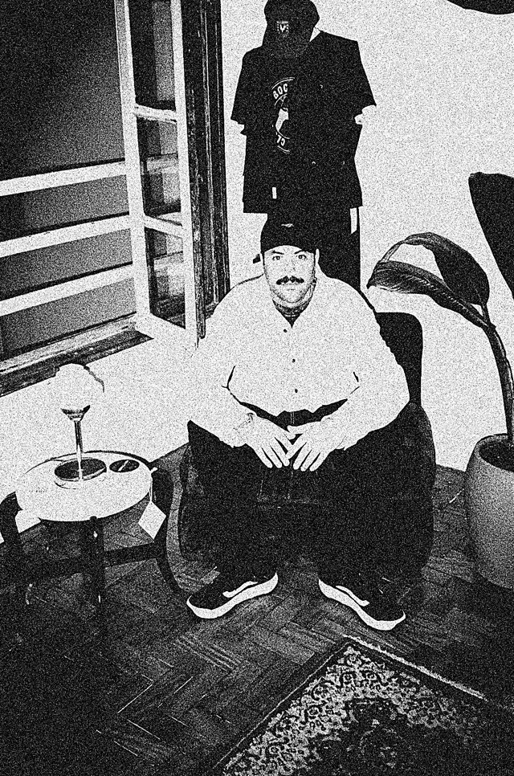
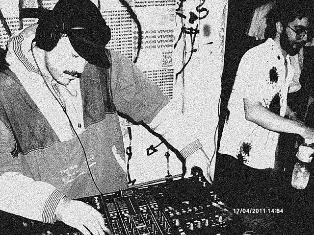
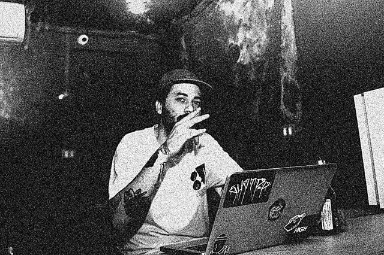
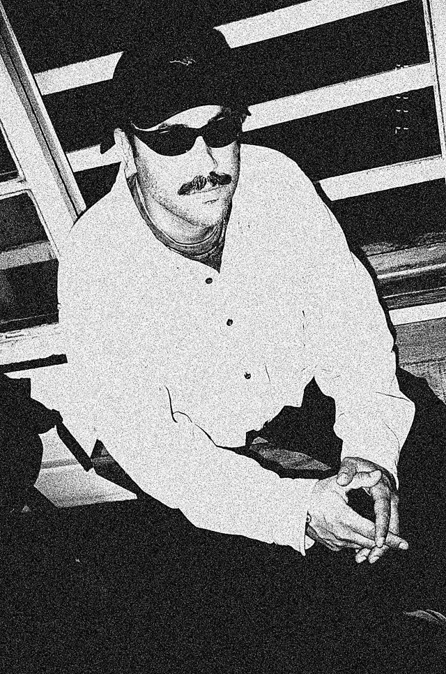
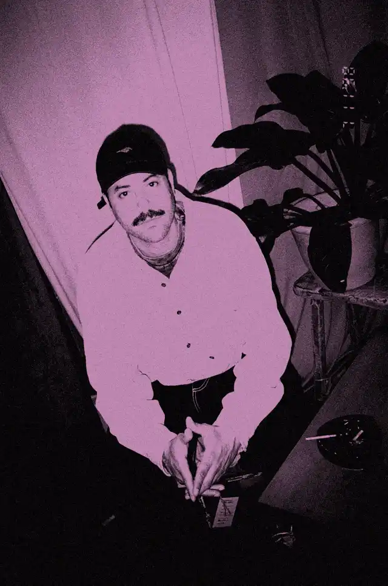

27 de dezembro no Universo Paralelo
DJ e produtor de downtempo em São Paulo
Caio Costa toca como Ätzøk há 12 anos: breakbeat, trip hop e house com samples vocais picotados, da pista cheia ao chillout.

Discografia
Um álbum em fita K7, um EP e uma colaboração. As próximas faixas estão em fase de master.
- L4 / AmarelaÁlbum em fita K7, DSRPTV recsDSRPTV041
- Desejos GeladosEP, Bliss RecordsBLISS030
- JazzyTha_Guts e Ätzøk, DSRPTV recsDSRPTV003

Três formatos de show
-
Set de pista
Breakbeat e house com samples vocais picotados, para a pista cheia da Desistência Clubber.

-
Long set
Horas de downtempo e trip hop com jazz e soul, como nas noites do Luci Bar.

-
Hanky Panky, com Boreu
Projeto ao vivo em dupla, com o show da Veneno Live gravado no YouTube.
Agenda de dezembro e janeiro
Já tocou no Mamba Negra, VOODOOHOP, Veludo Festival, Casa Torta e na Virada Cultural.
- A anunciarHanky Panky4 dez
- Luci BarLong set9 dez
- Lhama TakeoverHanky Panky18 dez
- Universo ParaleloChillout Stage27 dez
- BahiaLocal a anunciar11 jan

Booking e orçamento
Mande a data, a cidade e o formato. O booking é feito pela Lhama Bookings ou direto com o Caio, em djatzok@gmail.com.
